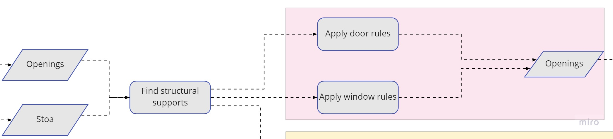
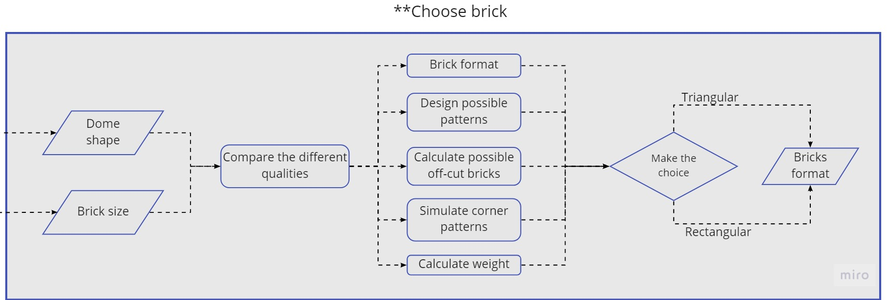
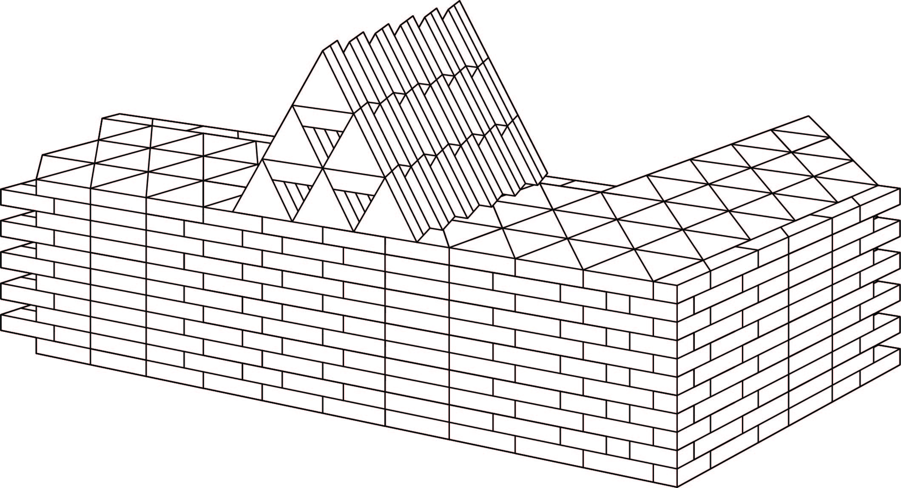
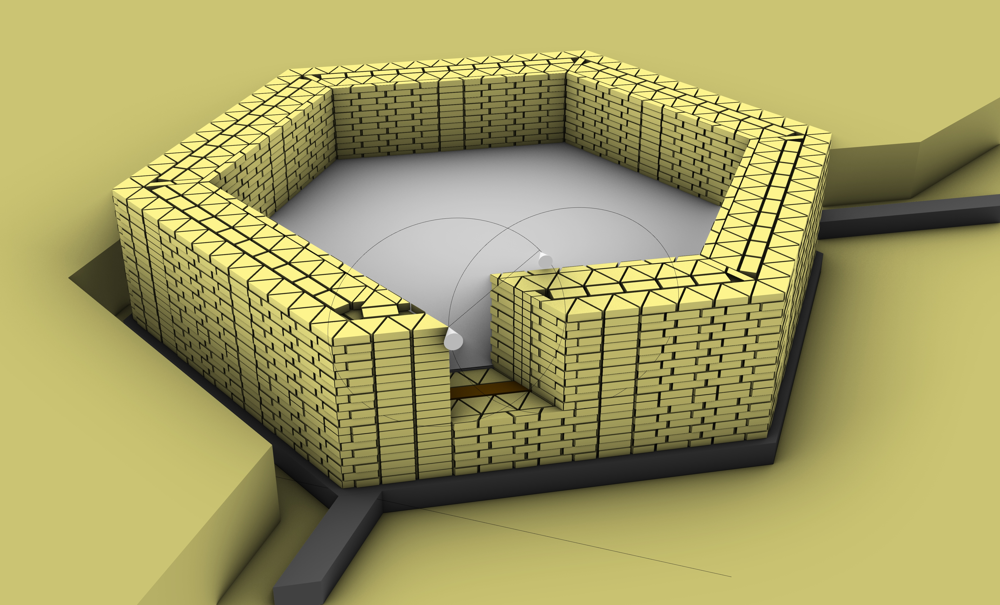
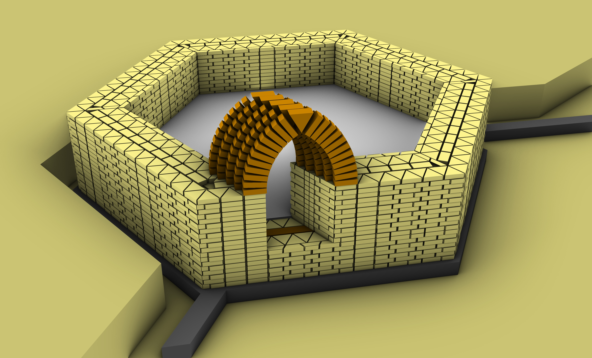

Openings:
How the openings are developed and constructed into the wall
Sometimes pictures are too small for their quality, feel free to open them in a new tab

Fig. 1: In top view, the openings are very clear visible.
This chapter will focus on how the openings are built. First the focus is on how all openings in the walls will look like. Then it will explain the bricklaying patterns and the process of building it.
Flowchart
In the 0_Introduction chapter the whole process of the design was shown. There were 5 groups that were dealt with individually. Last chapter resulted in the choice for triangular bricks. It concluded with the fact that openings are important to see if this brickchoice is solid.

Fig. 2: Flowchart of the openings
Then for all the elements bricklaying needs to be developed, both in detail as in construction methods. The choice is made with several considerations. These are shown in the following flowchart.

Fig. 3: Bricklaying considerations
Develop the openings
From the 2_Forming chapter in Rule N13 and N14 the doors and ventilation openings are added. Figure 4 and 5 show the doors and openings in the Hammam.

Fig. 4: Doors in the Hammam

Fig. 5: Openings in the Hammam
Bricklaying
First off, the doors are designed. The doors can be added in two different ways. Perpendicular on the wall or following the grid. For both options are some good arguments; perpendicular allows for a more natural feel, is easier to construct and probably is more sturdy. Following the grid is probably better for bricklaying, might be a little harder to construct, but allows for a bit of privacy with the direction of the doors. 5 experiments with doors are portrayed here:

Fig. 6: 3 options for doors
1) Semi-circular with header layer
Easy to set out, formwork can be produced cheaply e.g. with the help of a drum, even joint width, not the
most effective arch since it produces a high amount of lateral thrust.
2) Semi-circular arch with stretcher layer
Similar to archway #1, the stretcher course offers a larger area for accommodating loads from above.
3) Two-pointed arch with keystone
Setout is sophisticated, formwork from timber or bricks required, keystone helps to reduce the width of
joints. More structural effective form since the loads are transferred more vertical reducing lateral thrust.

Fig. 7: 2 options for doors
4) Shifted two-pointed arch with keystone
Similar to archway #3 but with shifted singular arches in order to accommodate archways with non-
orthogonal base plan.
5) Inverted catenary arch with keystone
Most sophisticated set out, special formwork required. Most structural form since resulting loads are
almost vertically transferred into the foundations. Despite keystone the mortar joints are occasionally
very wide.
Conclusion:
The decision which archway to choose fell in favour to the Two-pointed arch with keystone since it offers
a structural advantage in comparison with the semi-circle arch while its set-out is not as complicated as
the structural superior catenary arch. Anyway, in all the options, following the grid always won versus the
perpendicular approach.
For this arch a script was developed.
The script for wall bricklaying
If clicking doesn't download, please save the link as a .gh file
For the windows a same technique has been used. 5 different options are designed to choose from.

Fig. 8: 3 options for windows
1) Circular window with stretcher layer_
Circular window can be set out easily, formwork can be produced cheaply e.g. with the help of a pipe,
small opening size, uneven and wide joint widths are likely to crack.
2) Hexagonal window with stretcher layer of triangular bricks
Set out based on geometry only, formwork can be produced by loosely stacked bricks possible, big
opening size, keystone is likely to fall out.
3) Hexagonal window with stretcher layer of trapezoidal bricks
Set out based on geometry only, formwork can be produced by loosely stacked bricks possible, medium
opening size.

Fig. 9: 2 options for windows
4) Triangular window with stretcher layer of triangular and trapezoidal bricks
Set out based on geometry only, formwork not necessary, several small openings.
5) Triangular window with stretcher layer of shifted triangular and trapezoidal bricks
Similar to #4 but with shifted sets of openings offering more privacy than the previous versions.
Conclusion:
We decided for the option no. 4. Since it the triangular window from stretcher layers of shifted triangular
and trapezoidal bricks offers the necessary privacy on the inside while allowing for the necessary
ventilation.

Fig. 10: A more clear way of construction the walls
Construction
To continue the construction, the walls are build up until the lowest brick of the archway. Figure 11 clearly shows how the door fits perfectly within the grid and why this is an easier option than using perpendicular openings.

Fig. 11: Build until doorheight
The next step is to measure the archway in. As the Two-pointed arch with keystone is used, a small pin can be placed on the corner of the wall. A piece of rope can be placed until the other corner. Rotating the rope creates a perfect circle, and doing this for both corners will ensure the Two-pointed arch. When building some small foamwork is needed to hold both sides together. After 1 arch is done, applying mortar against the last arch makes sure that shape is good and it will not fall.

Fig. 12: Measure the archway in

Fig. 13: The realised archway
Lastly the wall is further build around the arch, so that the whole walls are finished. As the door is never in a corner, this shouldn't give problems in the whole Hammam.

Fig. 14: The realised wall